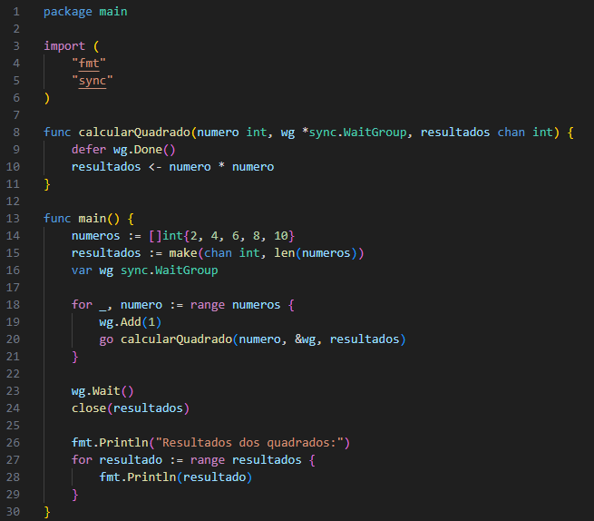
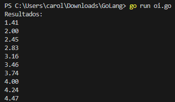

Bem vindo
Módulo I
Módulo II
Módulo III
Programas Básicos...Fatorial• O fatorial de um número é o produto de todos os inteiros positivos menores ou iguais a ele. Em Go, você pode calcular o fatorial de maneira recursiva ou iterativa. Esse programa calcula o fatorial de um número de maneira recursiva. A função fatorial é chamada repetidamente, multiplicando o número atual pelo fatorial de seu antecessor até chegar a 1.Aqui está um exemplo recursivo: Terminal: Verificar se um Número é Primo• Um número primo é um número maior que 1 que só é divisível por 1 e por ele mesmo A função isPrimo checa se um número é primo iterando do número 2 até a raiz quadrada do número, verificando se ele tem divisores. Se não houver divisores além de 1 e ele mesmo, o número é primo. Aqui está uma função que verifica isso: Terminal: Vetores e Matrizes...Vetores (Slices em Go)• Em Go, você pode usar slices para criar vetores de tamanho dinâmico. Em Go, slices são vetores de tamanho variável. Neste exemplo, usamos o append para adicionar elementos a um slice e o range para iterar sobre seus elementos. Veja um exemplo de como criar e manipular um vetor: Terminal:
Matrizes• Em Go, uma matriz é uma estrutura de dados bidimensional com tamanho fixo Matrizes em Go têm tamanho fixo e podem ser multidimensionais. Neste exemplo, temos uma matriz 2x3 e usamos loops aninhados para acessar e exibir cada elemento. Aqui está o exemplo: Terminal: Manipulação de Arquivos...• Em Go, você pode usar o pacote os para manipular arquivos, como criar, ler e apagar arquivos. Criar e Escrever em um Arquivo: - Com o pacote os, o programa cria um arquivo e escreve uma string nele. Aqui está um exemplo de como criar um arquivo e escrever algo nele: Ler de um Arquivo: - A função ReadFile do pacote ioutil permite ler o conteúdo do arquivo e imprimi-lo. Para ler o conteúdo de um arquivo: Terminal: Apagar um Arquivo Para apagar um arquivo, você pode usar a função os.Remove. Terminal: Exemplos mais complexos...1. Programa para Cálculo do Fatorial com Memoization • O cálculo do fatorial pode ser otimizado usando memoization, que armazena resultados de chamadas anteriores para evitar cálculos repetidos. Isso é útil, especialmente para funções recursivas que podem fazer muitas chamadas aninhadas. Terminal: 2. Uso de Vetores para Gerenciar Dados Complexos - Lista de Estudantes e Média de Notas • Aqui, slices são usados para armazenar informações de estudantes e suas notas. O programa calcula a média de notas de cada estudante, mostrando como trabalhar com dados complexos em Go. Este exemplo mostra como usar slices para armazenar dados complexos, como uma lista de estudantes e calcular a média de notas. Terminal: 3. Manipulação de Arquivos com Log Rotativo • Para sistemas que gravam muitos logs, o gerenciamento de arquivos pode ser feito por meio de logs rotativos, onde um novo arquivo é criado quando o anterior atinge um certo limite. Logs rotativos são usados para evitar que arquivos de log fiquem grandes demais. Quando o arquivo atual atinge o tamanho máximo, é criado um novo arquivo de log. 4. Concorrência em Go - Processamento Paralelo de Dados • Aqui vamos usar goroutines e canais para processar dados em paralelo. Este exemplo processa uma lista de números e calcula seus quadrados em paralelo.Neste exemplo, goroutines e canais são usados para calcular o quadrado de vários números em paralelo, aumentando a eficiência para grandes quantidades de dados.  Terminal: 5. Funções Assíncronas e Channels - Pipeline de Processamento • Aqui, implementamos um pipeline onde cada etapa do processamento é feita em uma goroutine separada e os dados fluem através de canais. Este exemplo aplica operações de transformação a uma lista de números (como dobrar e calcular a raiz quadrada).Este exemplo mostra um pipeline de processamento com várias etapas, em que cada etapa é feita em uma goroutine diferente. Os dados fluem através dos canais de uma etapa para a próxima, permitindo processar dados de maneira assíncrona e eficiente. Terminal:  Exemplos e explicações... |
|---|